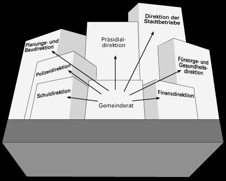
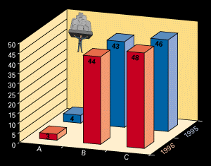
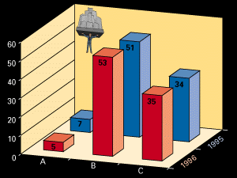
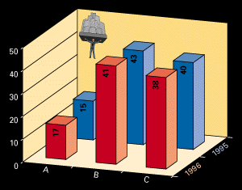

Die Stadtverwaltung der Stadt Bern ist ein modern organisiertes Dienstleistungszentrum. Rund 4000 Angestellte arbeiten in den verschiedenen Amtsstellen der sieben städtischen Direktionen. Die Stadt Bern ist auch führend im Bereich des „New Public Managements“. Drei Bereiche werden in einer Pilotphase bereits nach diesen modernsten Führungsgrundsätzen geleitet. Es sind dies: Feuerwehr, Jugendamt und Strasseninspektorat.
die den folgenden Direktionen vorstehen:

Stadtrat |
||
| Präsidialdirektion | Dr. Klaus Baumgartner | Postfach, 3008 Bern |
| Polizeidirektion | Dr. Kurt Wasserfallen | Postfach, 3007 Bern |
| Fürsorge- und Gesundheitsdirektion | Ursula Begert | Postfach, 3007 Bern |
| Schuldirektion | Dr. Claudia Omar | Postfach, 3007 Bern |
| Planungs- und Baudirektion | Adrian Guggisberg | Postfach, 3001 Bern |
| Finanzdirektion | Therese Frösch | Schwanengasse 14, 3001 Bern |
| Direktion der Stadtbetriebe | Alfred Neukomm | Schwanengasse 14, 3011 Bern |
Frage:
Sind Sie mit der Arbeit der Stadtverwaltung zufrieden?

B = trifft teilweise zu
C = trifft zu
Sind die Mitarbeiter und Mitarbeiterinnen der Stadtverwaltung
hilfsbereit und freundlich?

A =
trifft nicht zu
B = trifft teilweise zu
C = trifft zu
Betreffend Dienstleistungen und Auskünfte finde ich die
betreffende Amtsperson schnell?

A =
trifft nicht zu
B = trifft teilweise zu
C = trifft zu